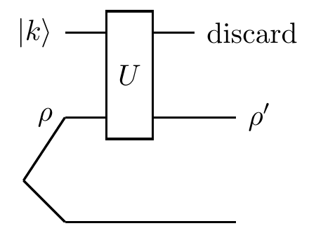
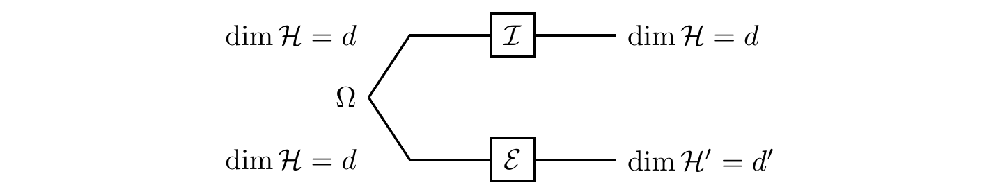

Quantum channels
Quantum evolution of any isolated system is unitary but its constituent parts may evolve in a more complicated way. In this chapter we will go beyond unitary evolutions and describe physically realisable transformations of density operators, called quantum channels. Be prepared for some name dropping; you will hear about Karl Kraus, Woody Stinespring, Andrzej Jamiołkowski and Man-Duen Choi. To be sure, knowing names will not give you more insights, but at least you will not be intimidated when you hear about the Stinespring and the Kraus representations, the Jamiołkowski isomorphism, or the Choi matrix.
We discussed how entanglement forced us to describe quantum states of open quantum systems (ones which are part of a larger system) in terms of density operators.
In this chapter we will describe how open systems evolve.
The question we are asking here is: what are the most general physically admissible transformations of density operators?
At the fundamental level — and this should be your quantum mantra — there is only one unitary evolution, and if there is any other evolution then it has to be derived from a unitary evolution.
From this perspective, any non-unitary evolution of an open system is induced by a unitary evolution of a larger system.
But how?
The short answer is: by adding (tensoring) and removing (partial trace) physical systems.
A typical combination of these operations is shown in the following diagram:

First, we prepare our system of interest in an input state \rho.
Then we dilate the system by “adding” (or “taking into account”) an auxiliary system which is large enough to include everything our system will interact with, and also large enough to be in a pure state |a\rangle.
Mathematically, we do this by tensoring the input state \rho with |a\rangle\langle a| to obtain |a\rangle\langle a|\otimes\rho (here we place the auxiliary system first and our system of interest second).
The dilated system is assumed to be closed so that it undergoes some unitary evolution U.
After all the interactions have taken place, we trace out the auxiliary system, turning the joint state U|a\rangle\langle a|\otimes\rho U^\dagger of the dilated system into the final state of our system of interest: the output state \rho'.
The net effect of this composition, as we shall see in a moment, is the input-output transformation which can be written, as long as the initial state of the auxiliary system in not correlated with the input state, in a nice compact way:
\rho\longmapsto\rho' = \sum_i E_i\rho E_i^\dagger
where the E_i are some operators that satisfy \sum_i E_i^\dagger E_i=\mathbf{1}.
This linear map is called a completely positive trace-preserving map, or, in the parlance of quantum information science, a quantum channel.
We will elaborate on the mathematics behind quantum channels shortly, but for now let us only check the essential properties, i.e. that this map preserves both trace and positivity (as its name suggests).
- Trace preserving: since the trace is linear, invariant under cyclic permutations of operators, and we ask that \sum_i E_i^\dagger E_i=\mathbf{1}, we see that
\operatorname{tr}\left(\sum_k E_k\rho E_k^\dagger\right)
= \operatorname{tr}\left(\sum_k E^\dagger_k E_k \rho\right)
= \operatorname{tr}\rho.
- Positivity preserving: since \rho is a positive (semi-definite) operator, and so is \sqrt{\rho}, we see that
\sum_k E_k\rho E_k^\dagger
= \sum_k (E_k\sqrt{\rho})(\sqrt{\rho} E_k^\dagger).
These conditions are certainly necessary if we want to map density operators into legal density operators, but we shall see in a moment that they are not sufficient: quantum channels are not just positive maps, they are completely positive maps.
We will discuss their special properties, describe the most common examples, and, last but not least, specify when the action of quantum quantum channels can be reversed, or corrected, so that we can recover the original input state.
This will set the stage for our subsequent discussion of quantum error correction.
Random evolution
Random unitaries
As a first step toward understanding the quantum description of an evolving open system, consider a “two-qubit universe” in which we observe only one of the qubits.
Let us revisit the controlled-\texttt{NOT} gate, in which two qubits undergo the unitary transformation
U
= |0\rangle\langle 0|\otimes\mathbf{1}+|1\rangle\langle 1|\otimes X
= \begin{bmatrix}\mathbf{1}&0\\0&X\end{bmatrix}
and let us focus on the transformation of the target qubit alone.
We know that it depends on the state of the control qubit:
- if the input state of the control qubit is |0\rangle, the target qubit evolves unitarily according to the identity operator \mathbf{1};
- if the input state of the control qubit is |1\rangle, the target qubit evolves unitarily according to the bit flip operator X;
- but for input states of the control that are superpositions of |0\rangle and |1\rangle the evolution of the target qubit is not unitary.
To justify this last point, note that, if the control qubit is in the state \alpha_0|0\rangle+\alpha_1|1\rangle and the target qubit is in some state |\psi\rangle, then the output state can be written as
\alpha_0|0\rangle\otimes\mathbf{1}|\psi\rangle + \alpha_1|1\rangle\otimes X|\psi\rangle
which shows that the control and the target become entangled.
The target qubit alone ends up in the statistical mixture of states |\psi\rangle (with probability |\alpha_0|^2) and X|\psi\rangle (with probability |\alpha_1|^2).
This can be easily verified by expressing the above output state of the two qubits as the density matrix
\begin{aligned}
|\alpha_0|^2|0\rangle\langle 0|\otimes \mathbf{1}|\psi\rangle\langle\psi|\mathbf{1}
\quad &+\quad |\alpha_1|^2|1\rangle\langle 1|\otimes X|\psi\rangle\langle\psi|X
\\+\, \alpha_0\alpha_1^\star|0\rangle\langle 1| \otimes \mathbf{1}|\psi\rangle\langle\psi|X
\quad &+\quad \alpha_0^\star\alpha_1|1\rangle\langle 0| \otimes X|\psi\rangle\langle\psi|\mathbf{1}
\end{aligned}
and then tracing over the control qubit, which gives
|\alpha_0|^2 \mathbf{1}|\psi\rangle\langle\psi|\mathbf{1}
+ |\alpha_1|^2 X|\psi\rangle\langle\psi| X.
We can then say that the input state of the target qubit evolves either according to the identity operator (with probability |\alpha_0|^2) or according to the operator X (with probability |\alpha_1|^2).
This argument works even if the target qubit is initially in a mixed state, since we are dealing with a linear transformation, and any mixed state can be expressed as a statistical ensemble of pure states (via the convex decomposition of a density matrix).
Thus, in general, we can express the evolution of the target qubit as
\rho\longmapsto
\rho'= |\alpha_0|^2 \mathbf{1}\rho\mathbf{1}+ |\alpha_1|^2 X\rho X
where \rho and \rho' are the input and the output states, respectively.
We may think about this input-output relation as a mathematical representation of a quantum communication channel in which an input qubit is bit-flipped (via the operator X) with some prescribed probability.
But we may also take a more “global” view and see the action of the channel as arising from a unitary evolution on a larger (dilated) system, here composed of two qubits.
Our discussion can easily be extended beyond the qubits to cover any conditional dynamics of the type
U
= \sum_i |i\rangle\langle i|\otimes U_i
=
\begin{bmatrix}
U_1 & 0 & 0 & \ldots
\\0 & U_2 & 0 & \ldots
\\0 & 0 & U_3 & \ldots
\\\vdots & \vdots &\vdots & \ddots
\end{bmatrix}
where the vectors |i\rangle form an orthonormal basis in the Hilbert space associated with a control system, and the U_i are the corresponding unitary operations performed on a target system.
If the control system is prepared in state \sum_i\alpha_i|i\rangle and the target in state |\psi\rangle, then the final state of the two systems is
\sum_i \alpha_i|i\rangle\otimes U_i|\psi\rangle
and, by the same sequence of arguments as before, we obtain the evolution of the target system alone, and express it as
\rho\longmapsto
\rho' = \sum_{i=1} p_i U_i \rho U^\dagger_i
where p_i=|\alpha_i|^2.
That is, the state of the target system is modified by the unitary U_i, chosen randomly with probability p_i.
The reason we are paying a particular attention to the random unitaries is that each unitary is invertible, and, as such, they offer a sliver of hope for reversing the action of the channel.
If we can learn, post factum, which particular unitary operation U_i was chosen then we can simply apply the inverse of that unitary and recover the original state.
For example, if we can measure the control system in the |i\rangle basis, then measuring the outcome to be k tells us that we have to apply U_k^\dagger to the target to recover its input state.
However, if we do not have access to the control system, then there is very little we can do: we cannot figure out which particular unitary was applied by inspecting the target system alone.
In this case the best we can do is to apply the inverse of the most likely unitary, which will then recover the input state, but only with some probability of success.
In order to do better than that we have to look at slightly different channels.
First though, a fundamental example of a random unitary evolution: a single qubit Pauli channel applies one of the Pauli operators, X, Y or Z, chosen randomly with some prescribed probabilities p_x, p_y and p_z, giving
\rho\longmapsto
p_0 \mathbf{1}\rho\mathbf{1}+ p_x X\rho X+ p_y Y\rho Y+ p_z Z\rho Z.
The Pauli operators represent quantum errors: bit-flip X, phase-flip Z, and the composition of the two Y=iXZ.
Random isometries
There is another invertible operation in quantum theory: an isometry, which is a combination of adding another quantum system and then applying a unitary transformation to the resulting composite system.
So let us take a quick look at a simple generalisation of random unitaries, namely random isometries V_i, which give
\rho\longmapsto
\rho' = \sum_{i=1} p_i V_i \rho V^\dagger_i.
An isometry V is similar to a unitary operator except that it maps states in the Hilbert space \mathcal{H} to states in a larger Hilbert space \mathcal{H}' (cf. {the appendix on isometries}(#isometries)).
Here \mathcal{H} is associated with the input and \mathcal{H}'=\mathcal{H}_\mathcal{A}\otimes\mathcal{H} with the dilated system (i.e. the ancilla \mathcal{A} plus our system of interest).
Isometries satisfy V^\dagger V=\mathbf{1}, and they are usually implemented by adding an ancilla in a fixed state and then applying a unitary operation to the resulting composed system.
They can be then reversed by applying the inverse of that unitary and discarding the ancilla.
Now, if \mathcal{H}' is sufficiently larger than \mathcal{H}, and if the images \mathcal{H}'_i of \mathcal{H} in \mathcal{H}' under the different isometries V_i do not overlap, then we can reverse the action of the channel:
we can, at least in principle, perform a measurement on \mathcal{H}', defined by the partition \mathcal{H}'=\mathcal{H}'_1\oplus\mathcal{H}'_2\oplus\ldots, and find out which subspace contains the output state;
once we know which subspace the input was sent to, we know which particular isometry V_k was applied by the channel;
then we simply apply V^\dagger_k.
In order to see this consider the following simple, but important, example, which we will revisit several times in different disguises.
Alice constructs a quantum channel which is a mixture of four isometries.
The input is a single qubit, and the output is a dilated system composed of three qubits.
She prepares the input qubit in a state |\psi\rangle and then combines it with the two ancillary qubits which are in a fixed state |0\rangle|0\rangle.
Then she applies one of the four, randomly chosen, unitary operations to the three qubits, to generate the following four isometries:
\begin{aligned}
V_1 &= |000\rangle\langle 0| + |111\rangle\langle 1|
\\V_2 &= |001\rangle\langle 0| + |110\rangle\langle 1|
\\V_3 &= |010\rangle\langle 0| + |101\rangle\langle 1|
\\V_4 &= |100\rangle\langle 0| + |011\rangle\langle 1|.
\end{aligned}
The three qubits, which form the output of the channel, are given to Bob, whose task is to recover the original state |\psi\rangle of the input qubit.
In this scenario, Bob, who knows the four isometries, can find out which particular isometry was applied.
He knows that
- V_1 maps \mathcal{H} to \mathcal{H}'_1, which is a subspace of \mathcal{H}' spanned by |000\rangle and |111\rangle;
- V_2 maps \mathcal{H} to \mathcal{H}'_2, which is a subspace of \mathcal{H}' spanned by |001\rangle and |110\rangle;
- V_3 maps \mathcal{H} to \mathcal{H}'_3, which is a subspace of \mathcal{H}' spanned by |010\rangle and |101\rangle;
- V_4 maps \mathcal{H} to \mathcal{H}'_4, which is a subspace of \mathcal{H}' spanned by |100\rangle and |011\rangle.
Given that these subspaces are mutually orthogonal, and \mathcal{H}'=\mathcal{H}'_1\oplus\mathcal{H}'_2\oplus\mathcal{H}'_3\oplus\mathcal{H}'_4, Bob can perform a measurement defined by the projectors on these subspaces.
For example, if Alice randomly picked V_2, then the input state |\psi\rangle=\alpha_0|0\rangle+\alpha_1|1\rangle will be mapped to the output state \alpha_0|001\rangle+\alpha_1|110\rangle in the \mathcal{H}'_2 subspace.
Bob’s measurement will then detect \mathcal{H}'_2 as the subspace where the output state resides, but the measurement (i.e. the corresponding projection) will not affect any state in that subspace.
Bob can now simply apply V_2^\dagger and obtain |\psi\rangle.
Just in case you are curious (as you should be!), below is a diagram of how the four isometries are implemented.
How would you reverse these operations?

Single unitaries or isometries apart, it turns out that the only reversible, or correctable, channels (i.e. channels in which the input state can be recovered) are exactly the mixtures of mutually orthogonal isometries V^\dagger_i V_j=\delta_{ij}\mathbf{1}.
We shall return to these channels later on.
Evolution of open systems
Needless to say, there is more to evolutions of open systems than random isometries, and what follows is the most general scenario we will discuss.
Consider two interacting systems, \mathcal{A} and \mathcal{B}, but this time we do not assume that their interacting dynamics admits a control-target interpretation.
We will view \mathcal{A} as an auxiliary system, i.e. an ancilla, and focus on the evolution of system \mathcal{B}.
Let us pick an orthonormal basis |i\rangle of the Hilbert space \mathcal{H}_\mathcal{A} associated with the ancilla.
Any unitary transformation of the combined system \mathcal{AB} can then be written as
U
= \sum_{ij}|i\rangle\langle j|\otimes B_{ij}
=
\begin{bmatrix}
B_{11} & B_{12} & B_{13} & \ldots
\\B_{21} & B_{22} & B_{23} & \ldots
\\B_{31} & B_{32} & B_{33} & \ldots
\\\vdots & \vdots & \vdots & \ddots
\end{bmatrix}
where the B_{ij} are operators acting on the the Hilbert space \mathcal{H}_\mathcal{B} associated with system \mathcal{B}.
Note that the B_{ij} do not need to be unitary, but, for the overall transformation U to be unitary, they must satisfy
\begin{aligned}
\sum_i B_{ik}^\dagger B_{il}
&= \delta_{kl} \mathbf{1}_\mathcal{AB}
\\\sum_i B_{ki}B_{li}^\dagger
&= \delta_{kl} \mathbf{1}_\mathcal{B}
\end{aligned}
\tag{$\star$}
where \mathbf{1}_\mathcal{AB} and \mathbf{1}_\mathcal{B} are the identity operators on \mathcal{H}_\mathcal{A}\otimes\mathcal{H}_\mathcal{B} and \mathcal{H}_\mathcal{B}, respectively.
These two conditions correspond to the requirement that both column and row vectors must be orthonormal for a matrix to be unitary, except that here U is a block matrix, and the entries B_{ij} are complex matrices rather than complex numbers, so some care must be taken with the order of multiplication.
Again, the evolution of the system \mathcal{B} depends on both U and on the initial state of the auxiliary system \mathcal{A}.
Without any loss of generality, we may assume that system \mathcal{A} is in a pure state which can be chosen to be one of the basis states |i\rangle, say |k\rangle.
In this case, U acts by
U\colon |k\rangle\otimes|\psi\rangle \longmapsto
\sum_i |i\rangle\otimes B_{ik}|\psi\rangle
\tag{$\ddagger$}
for an arbitrary state |\psi\rangle of \mathcal{B}.
The resulting density operator for \mathcal{B} is found by taking the density operator of the output state of \mathcal{AB}, which is
\sum_{ij} |i\rangle\langle j|\otimes B_{ik}|\psi\rangle\langle\psi|B_{jk}^\dagger
and then tracing out \mathcal{A}, obtaining
\begin{aligned}
\operatorname{tr}_\mathcal{A} \left(
\sum_{ij} |i\rangle\langle j|\otimes B_{ik}|\psi\rangle\langle\psi|B_{jk}^\dagger
\right)
&= \sum_{ij} \langle i|j\rangle\cdot B_{ik}|\psi\rangle\langle\psi|B_{jk}^\dagger
\\&= \sum_i B_{ik}|\psi\rangle\langle\psi|B_{ik}^\dagger
\end{aligned}
where we have used the fact that \langle i|j\rangle=\delta_{ij}.
In general, for any input state \rho, we obtain the map
\rho\longmapsto
\rho'= \sum_i B_{ik}\rho B^\dagger_{ik} \equiv \sum_i B_{i}\rho B^\dagger_{i}
where, in the last expression on the right-hand size, we have dropped index k (remember, it was there only to remind us about the initial state of the ancilla).
Since the overall transformation U is unitary, recall that the B_i satisfy \sum_i B_i^\dagger B_i=\mathbf{1}.
This normalisation conditions guarantees that the trace is preserved.
In summary, we can think about a quantum evolution of subsystem \mathcal{B} as a sequence of the three distinct operations:
\begin{aligned}
\rho
\longmapsto &\underbrace{|k\rangle\langle k|\otimes\rho}_{\text{add ancilla}}
\\\longmapsto &\underbrace{U(|k\rangle\langle k|\otimes\rho) U^\dagger}_{\text{unitary evolution}}
\\\longmapsto &\underbrace{\operatorname{tr}_\mathcal{A} \left[U(|k\rangle\langle k|\otimes\rho) U^\dagger\right]}_{\text{discard ancilla}}
= \sum_i B_{i}\rho B_{i}^\dagger
=\rho'.
\end{aligned}
In summary:
- First we pick up a system of interest which, in general, can be in a mixed state \rho. It may be the case that this system is entangled with some other degrees of freedom or with some other physical systems, but these other entities will remain passive and will not enter any subsequent dynamics.
- Then we dilate the system: we add an ancilla which is large enough to include everything our system will interact with, and also large enough to be in a pure state. The expansion ends when the composed system is (for all practical purposes) isolated and follows a unitary evolution U.
- After the unitary evolution takes place, we discard the ancilla and focus on the system alone. In fact we do not have to discard exactly what we added: we can discard only part of the ancilla, or any other part of the dilated system.
- The output system in this scenario does not have to be the original input system, but usually it is.

It is adding (i.e. tensoring) the auxiliary system in a fixed state, and then discarding it (via the partial trace), that is responsible for the non-unitary character of this evolution.
Stinespring’s dilation and Kraus’s ambiguity
Once we start playing with adding physical systems and increasing the dimension of the underlying Hilbert space, it is convenient to switch from unitaries to isometries.
This is more for mathematical simplicity than physical insight, but it is always good to declutter our equations a bit if we can.
Note that when we fix the initial state of system \mathcal{A} to be |k\rangle, we can use Equation (\ddagger) to define an isometry V from \mathcal{H}_\mathcal{B} to \mathcal{H}_\mathcal{A}\otimes \mathcal{H}_\mathcal{B}, by
V\colon |\psi\rangle
\longmapsto \sum_i|i\rangle\otimes E_i|\psi\rangle
where E_i\equiv B_{ik} and, according to Equation (\star), \sum_i E_i^\dagger E_i=\mathbf{1} (here the identity operator acts on \mathcal{H}_\mathcal{B}).
The matrix representation of an isometry is a rectangular matrix given by selecting only a few of the columns from a unitary matrix;
here, with |k\rangle fixed, it is only the k-th column of the block matrix U that determines the evolution of \mathcal{B}, as shown in Figure 7.1.
Let us now rephrase our derivation of the evolution of system \mathcal{B} using isometries.
Note that the isometry V in Figure 7.1 acts by
|\psi\rangle\langle\psi|
\longmapsto
V|\psi\rangle\langle\psi|V^\dagger
= \sum_{ij} |i\rangle\langle j| \otimes E_i|\psi\rangle\langle\psi| E_j^\dagger.
We trace out \mathcal{A}, recall that \operatorname{tr}|i\rangle\langle j| = \langle i|j\rangle=\delta_{ij}, and express the evolution of system \mathcal{B} as
\rho
\longmapsto
\rho' = \operatorname{tr}_\mathcal{A} V\rho V^\dagger =\sum_i E_i\rho E_i^\dagger,
where \sum_iE_i^\dagger E_i=\mathbf{1}, and we allowed the input states \rho of \mathcal{B} to be mixed (since they can always be expressed as statistical mixtures of pure states |\psi\rangle).
This expression shows two different ways of looking at quantum evolutions, and both even have names associated with them.
Stinespring dilation.
Any quantum channel \mathcal{E} can be thought of as arising from a unitary evolution on a dilated system.
When we combine tensoring and the unitary evolution into an isometry V, we can express the action of the channel \mathcal{E} as
\rho \longmapsto \rho'= \operatorname{tr}_\mathcal{A} V\rho V^\dagger,
where we trace out a suitably chosen ancilla \mathcal{A}.
In quantum information science we often refer to this approach as “the Church of the Larger Hilbert Space”.
Kraus representation (a.k.a. operator-sum decomposition).
It is often more convenient to not deal with a larger Hilbert space, but to instead work with operators between the input and output Hilbert spaces
\rho \longmapsto \rho'= \sum_i E_i\rho E_i^\dagger.
Here we avoid dragging in the ancilla, which can be a good thing, since ancillas typically represent environments that can be very large and complex.
This operator–sum decomposition is not unique, since the operators E_i (known as the Kraus operators or effects) depend on the choice of basis in the ancilla.
The Kraus operators must satisfy the normalisation condition \sum_i E^\dagger_iE_i=\mathbf{1}, also known as the completeness relation.
We can easily switch between these two equivalent representations:
- We have already seen how to go from a unitary evolution U on a larger system, to an isometry V, and then to a map on density operators represented by a set of Kraus operators E_i (as in Figure 7.1).
- Conversely, once we have an operator-sum representation of the channel with a set of Kraus operators E_i, we can introduce an ancilla of dimension equal to the number of Kraus operators, and use the orthonormal basis |i\rangle to form the isometry V=\sum_i|i\rangle\otimes E_i.
In terms of matrices, this corresponds to simply “stacking up” the matrices E_i to form the block column (as shown in Figure 7.1), which gives us the matrix representation of V.
If we want to go further, from an isometry V to a unitary U, then the next step is somewhat arbitrary: we can choose all the remaining block columns of U however we please, as long as we end up with a unitary matrix U.
In summary:
All linear transformations of density operators that can be written in the Stinespring (or, equivalently, Kraus) form represent physically realisable operations, and we call them quantum channels.
We note again that the Kraus decomposition is not unique: the operators E_i depend on the choice of the ancilla basis.
Indeed, let |e_i\rangle and |f_j\rangle be two orthonormal bases in the Hilbert space associated with the ancilla.
Then V can be expressed as
\begin{aligned}
V
&= \sum_i|e_i\rangle\otimes E_i
\\&= \sum _{ij} |f_j\rangle\langle f_j|e_i\rangle\otimes E_i
\\&= \sum_{j} |f_j\rangle \otimes \sum_i \underbrace{\langle f_j|e_i\rangle}_{R_{ji}} E_i
\\&= \sum_{j} |f_j\rangle \otimes F_j
\end{aligned}
where we have used the fact that \sum_j |f_j\rangle\langle f_j|=\mathbf{1}, and where R_{ji}=\langle f_j|e_i\rangle is a unitary matrix connecting the two orthonormal bases (and also the two sets of the Kraus operators) via F_j=\sum_i R_{ji} E_i.
So we have a set of Kraus operators E_i associated with basis |e_i\rangle and another, unitarily related, set of Kraus operators associated with basis |f_j\rangle, and the two sets describe the same isometry, and hence the same quantum channel.
This correspondence goes both ways: if two channels \mathcal{E} and \mathcal{F} have their Kraus operators related by some unitary R_{ji}, then the two channels are identical:
\begin{aligned}
\mathcal{F}(\rho)
&= \sum_j F_j\rho F^\dagger_j
\\&= \sum_{ijk} R_{ji}E_i \rho E^\dagger_k R^\star_{jk}
\\&=\sum_{ik} \underbrace{\left(\sum_j R_{jk}^\star R_{ji}\right)}_{\delta_{ki}} E_i\rho E^\dagger_k
\\&= \sum_i E_i\rho E^\dagger_i
\\&= \mathcal{E}(\rho).
\end{aligned}
In summary:
Suppose E_1,\ldots,E_n and F_1,\ldots,F_m are Kraus operators associated with quantum channels \mathcal{E} and \mathcal{F}, respectively.
We can append zero operators to the shorter list to ensure that n=m.
Then \mathcal{E} and \mathcal{F} describe the same channel if and only if F_j=\sum_i R_{ji} E_i for some unitary R.
In particular, this unitary equivalence of the Kraus operators implies that the identity channel \rho\mapsto\rho'=\mathbf{1}\rho\mathbf{1} can only have Kraus operators that are proportional to the identity.
Single qubit channels
The best way to familiarise ourselves with the concept of a quantum channel is to study a few examples, and we will start with the simplest case: single qubit channels.
The single qubit case is special since we can visualise the action of the channel by looking at the corresponding deformation of the Bloch sphere.
Recall that an arbitrary density matrix for a single qubit can be written in the form
\begin{aligned}
\rho
&= \frac{1}{2}\left(\mathbf{1}+\vec{s}\cdot \vec\sigma\right)
\\&= \frac{1}{2}\left(\mathbf{1}+s_x X+ s_y Y + s_z Z\right)
\end{aligned}
where \vec{s} is the Bloch vector of the qubit with components (s_x, s_y, s_z), and X, Y, and Z are the Pauli operators.
Recall that unitary operations rotate the Bloch sphere.
In particular the X, Y, and Z — viewed as unitary transformations — rotate the Bloch sphere by 180^\circ around the x, y, and z axes, respectively.
General quantum channels, however, may deform it further, into spheroids with a displaced centre, as the following examples show.
A bit-flip with probability p:
\rho \longmapsto (1-p)\rho+pX\rho X.
The Kraus operators are \sqrt{1-p}\mathbf{1} and \sqrt{p}X;
the original Bloch sphere shrinks into a prolate spheroid aligned with the x-axis;
for the specific case of p=\frac{1}{2}, the Bloch sphere degenerates to the [-1,1] interval on the x-axis.
A phase-flip with probability p:
\rho \longmapsto (1-p)\rho+pZ\rho Z.
The Kraus operators are \sqrt{1-p}\mathbf{1} and \sqrt{p}Z;
the original Bloch sphere shrinks into a prolate spheroid aligned with the z-axis;
for the specific case of p=\frac{1}{2}, the Bloch sphere degenerates to the [-1,1] interval on the z-axis.
The depolarising channel:
\rho\longmapsto (1-p)\rho + \frac{p}{3}\left(X\rho X+Y\rho Y+Z\rho Z\right).
Here the qubit remains intact with probability 1-p, while a quantum error occurs with probability p.
The error can be of any one of three types: bit-flip X, phase-flip Z, or and both bit- and phase-flip Y; each type of error is equally likely.
For p<\frac{3}{4}, the original Bloch sphere contracts uniformly under the action of the channel, and the Bloch vector shrinks by the factor 1-\frac{4}{3}p;
for the specific case of p=\frac{3}{4}, the Bloch sphere degenerates to the point at the centre of the sphere;
for p>\frac{3}{4}, the Bloch sphere is flipped, and the Bloch vector starts pointing in the opposite direction increasing the magnitude up to \frac{1}{3} (which occurs for p=1).
There are two interesting points that must be mentioned here.
The first one is about the interpretation of the action of the channel in terms of Kraus operators: our narrative may change when we switch to a different set of effects.
For example, take the phase-flip channel with p=\frac{1}{2} and switch from the effects
\begin{aligned}
E_1 &= \frac{1}{\sqrt{2}}\mathbf{1}
\\E_2 &= \frac{1}{\sqrt{2}}Z
\end{aligned}
to
\begin{aligned}
F_1 &= \frac{1}{\sqrt{2}}(E_1+E_2)=|0\rangle\langle 0|
\\F_2 &= \frac{1}{\sqrt{2}}(E_1-E_2)=|1\rangle\langle 1|.
\end{aligned}
These two sets of Kraus operators \{E_1,E_2\} and \{F_1,F_2\} describe the same channel, but the narrative is different.
The first set of effects tells us that the channel chooses randomly, with the same probability, between the two options: let the qubit pass undisturbed or apply the phase-flip Z;
the second set tells us that channel essentially performs the measurement in the standard basis, but the outcome of the measurement is not revealed.
In general:
Describing actions of quantum channels purely in terms of their effects (i.e. Kraus operators) can be ambiguous.
The second interesting point is that not all transformations of the Bloch sphere into spheroids are possible.
For example, we cannot deform the Bloch sphere into a pancake-like oblate spheroid.
This is due to complete positivity (instead of mere positivity) of quantum channels, which we will explain shortly.
Composition of quantum channels
We mentioned that quantum channels are combinations of
- adding a physical system in a fixed state (via tensoring),
- discarding a physical system (taking a partial trace),
- and unitary transformations.
For consistency let us note that each of these operations admits an operator-sum decomposition. This is obvious for unitary evolution (\rho\mapsto U\rho U^\dagger), but perhaps less so for the other two operations.
Adding a system.
Any quantum system can be expanded by bringing in an auxiliary system in a fixed state |a\rangle.
This transformation takes vectors in the Hilbert space associated with the original system and tensors them with a fixed vector |a\rangle in the Hilbert space associated with the auxiliary system:
|\psi\rangle
\longmapsto |a\rangle\otimes|\psi\rangle
= (|a\rangle\otimes\mathbf{1}) |\psi\rangle.
In terms of density operators, we write this “expansion” transformation as
\begin{aligned}
\rho
\longmapsto \rho'
&= |a\rangle\langle a|\otimes\rho
\\&= (|a\rangle\otimes\mathbf{1})\rho (\langle a|\otimes\mathbf{1})
\\&= V\rho V^\dagger
\end{aligned}
where V=\mathbf{1}\otimes|a\rangle.
We note that V^\dagger V = \mathbf{1}\otimes\langle a|a|=\rangle\mathbf{1} is the identity in the Hilbert space associated with the system, and so V is an isometry.
Indeed, this transformation is an isometric embedding.
Discarding a system.
Conversely, given a composite system in state \rho, we can discard one of its subsystems.
The partial trace over an auxiliary system can be written in the Kraus representation as
\begin{aligned}
\rho
\longmapsto \rho'
&= \operatorname{tr}_\mathcal{A}\rho
\\&= (\operatorname{tr}\otimes\mathbf{1})\rho
\\&= \sum_i (\langle i|\otimes\mathbf{1})\rho(|i\rangle\otimes\mathbf{1})
\\&= \sum_i E_i\rho E^\dagger_i
\end{aligned}
where the vectors |i\rangle form an orthonormal basis in the Hilbert space associated with the auxiliary system.
Again, we can check that the Kraus operators E_i=\langle i|\otimes\mathbf{1} satisfy the completeness relation \sum_i E^\dagger_i E_i =\mathbf{1}\otimes\mathbf{1} (using the fact that \sum_i|i\rangle\langle i|=\mathbf{1}).
Any sequential composition of two quantum channels \mathcal{E} and \mathcal{F} with Kraus operators \{A_i\}_{i\in I} and \{B_j\}_{j\in J} (respectively) is another quantum channel described by the Kraus operators \{B_jA_i\}_{i\in I,j\in J}.
Showing this is rather straightforward, at least in the operator-sum representation: let
\begin{aligned}
\mathcal{E} &= \sum_i A_i\cdot A^\dagger_i
\\\mathcal{F} &= \sum_j B_j\cdot B^\dagger_j
\end{aligned}
where \sum_i A^\dagger_i A_i=\sum_j B^\dagger_j B_j=\mathbf{1};
then the sequential composition of \mathcal{E} followed by \mathcal{F} can be written as
\mathcal{F} \circ\mathcal{E}
= \sum_{ij} (B_jA_i) \cdot (B_jA_i)^\dagger
so that the B_jA_i are the Kraus operators associated with the new channel \mathcal{F}\circ\mathcal{E}, where the normalisation condition (or completeness relation) follows from
\begin{aligned}
\sum_{ij} (B_jA_i)^\dagger (B_jA_i)
&= \sum_i A_i^\dagger\left(\sum_j B_j^\dagger B_j\right)A_i
\\&= \sum_i A_i^\dagger A_i
\\&= \mathbf{1}.
\end{aligned}
You might wonder why we explicitly called the above composition “sequential” — isn’t this how we always compose functions?
In actual fact, since we have access to tensor products, there is another sort of composition, namely parallel composition: if we have systems \mathcal{A} and \mathcal{B} with channels \mathcal{E}_\mathcal{A} acting on \mathcal{A} and \mathcal{E}_\mathcal{B} acting on \mathcal{B}, then the parallel composition is denoted by \mathcal{E}_\mathcal{A}\otimes\mathcal{E}_\mathcal{B}, acting on the joint system \mathcal{A}\otimes\mathcal{B}, and with Kraus operators given by the A_i\otimes B_j.
The normalisation condition again follows from a simple calculation:
\begin{aligned}
\sum_{ij} (A_i\otimes B_j)^\dagger (A_i\otimes B_j)
&= \sum_{ij} A_i^\dagger A_i \otimes B_j^\dagger B_j
\\&= \mathbf{1}_A\otimes\mathbf{1}_B.
\end{aligned}
Now that we know how to compose quantum channels in terms of Kraus operators, we can see that the Stinespring representation is perfectly consistent with the Kraus representation: the three basic operations that we are allowed to use to build channels in the Stinespring representation (i.e. adding a system, unitary evolution, and discarding a system) are all themselves quantum channels, in that they admit a Kraus decomposition.
Before moving on, we make a small (but important) remark:
When we compose quantum channels, each channel needs its own independent ancilla;
do not share ancillas between different channels.
For example, say we have three channels, \mathcal{E}_1, \mathcal{E}_2, and \mathcal{E}_3, with \mathcal{E}_i defined by the unitary U_i and the state |a_i\rangle of its ancilla.
Then the (sequential) composition \mathcal{E}_3\circ\mathcal{E}_2\circ\mathcal{E}_1 is given by

For more on this, see the appendix on Markov approximation.
Completely positive trace-preserving maps
It is easy to verify that quantum channels preserve positivity and trace, but the converse is not true!
You may find it surprising, but there are linear maps that preserve positivity and the trace, but which are not quantum channels.
The matrix transpose operation \rho\mapsto\rho'=\rho^T is a good example of such an unphysical operation: it preserves both trace and positivity, and if \rho is a density matrix then so too is \rho'=\rho^T, but the transpose cannot be written in the Stinespring (or the Kraus) form;
it is not induced by a unitary operation on some larger Hilbert space, and it cannot be implemented.
So, we then ask, what is the class of physically admissible maps?
Mathematically speaking, a quantum channel \mathcal{E} is represented by a map
\mathcal{E}\colon \mathcal{B}(\mathcal{H}) \to \mathcal{B}(\mathcal{H}')
mapping states (i.e. density operators) on some Hilbert space \mathcal{H} to states on some, possibly different, Hilbert space \mathcal{H}'.
But we are not interested in just any such maps, of course — the statistical interpretation of quantum theory imposes certain properties on the subset of maps in which we are interested.
Firstly, for such a map \mathcal{E} to be a channel it must respect the mixing of states.
Consider an ensemble of systems, with a fraction p_1 of them in the state \rho_1, and the remaining p_2 of them in the state \rho_2.
The overall ensemble is described by \rho=p_1\rho_1+p_2\rho_2.
If we apply \mathcal{E} to each member of the ensemble individually, then the overall ensemble will be described by the density operator \rho'=\mathcal{E}(\rho), which is given by \rho'=p_1\mathcal{E}(\rho_1)+p_2\mathcal{E}(\rho_2).
We conclude that \mathcal{E} must be a linear map.
Next, since \mathcal{E} must map density operators to density operators it must be both positive (\mathcal{E}(\rho)\geqslant 0 whenever \rho\geqslant 0) and trace preserving (\operatorname{tr}\mathcal{E}(\rho)=\operatorname{tr}\rho for all \rho).
Finally comes a subtle point.
It turns out that being positive is not good enough;
we must further require that the map \mathcal{E} remains positive even when extended to act on a part of a larger system.
Suppose that Alice and Bob share a bipartite system \mathcal{AB} in an entangled state \rho_\mathcal{AB}, and, whilst Alice does nothing, Bob applies the local operation \mathcal{E} to his subsystems, and his subsystems only.
Then the resulting map on the whole bipartite system is given by \mathbf{1}\otimes\mathcal{E}, and this must give a proper density operator \rho'_\mathcal{AB} of the composed system.
It turns out that this is a strictly stronger property than mere positivity;
we are asking for something called complete positivity.
Needless to say, complete positivity of \mathcal{E} implies positivity, but the converse does not hold: there are maps which are positive but not completely positive.
The matrix transpose operation \rho\rightarrow \rho'=\rho^T is a classic example of such a map.
In fact, we can study the matrix transpose a bit further.
Consider the transpose operation on a single qubit: T\colon(|i\rangle\langle j|)\mapsto|j\rangle\langle i| (for i,j\in\{0,1\}).
It preserves both trace and positivity, and if \rho is a density matrix then so too is \rho'=\rho^T.
However, if the input qubit is part of a two qubit system, initially in the entangled state |\Omega\rangle=\frac{1}{\sqrt{2}}(|0\rangle|0\rangle+|1\rangle|1\rangle), and the transpose is applied to only one of the two qubits (say, the second one), then the density matrix of the two qubits evolves under the action of the partial transpose \mathbf{1}\otimes T as
\begin{aligned}
|\Omega\rangle\langle\Omega|
= \frac{1}{2}\sum_{ij} |i\rangle\langle j| \otimes |i\rangle\langle j|
&\overset{\mathbf{1}\otimes T}{\longmapsto}
\frac{1}{2}\sum_{ij} |i\rangle\langle j| \otimes T( |i\rangle\langle j|)
\\&= \frac{1}{2}\sum_{ij} |i\rangle\langle j| \otimes |j\rangle\langle i|.
\end{aligned}
The output is the \texttt{SWAP} matrix, since it describes the \texttt{SWAP} operation: |j\rangle|i\rangle\mapsto|i\rangle|j\rangle.
Since this operation squares to the identity, we know that its eigenvalues must be either \pm1: states which are symmetric under interchange of the two qubits have eigenvalue 1, while antisymmetric states have eigenvalue -1.
So the \texttt{SWAP} matrix has negative eigenvalues, which means that \mathbf{1}\otimes T does not preserve positivity, and therefore T is not a completely positive map.
If you prefer to see this more explicitly, then you can use the matrix representation of |\Omega\rangle\langle\Omega|, apply the partial transpose \mathbf{1}\otimes T, and then inspect the resulting matrix:
\frac12\left[
\begin{array}{cc|cc}
1 & 0 & 0 & 1
\\0 & 0 & 0 & 0
\\\hline
0 & 0 & 0 & 0
\\1 & 0 & 0 & 1
\end{array}\right]
\overset{\mathbf{1}\otimes T}{\longmapsto}
\frac12\left[
\begin{array}{cc|cc}
1 & 0 & 0 & 0
\\0 & 0 & 1 & 0
\\\hline
0 & 1 & 0 & 0
\\0 & 0 & 0 & 1
\end{array}\right].
That is, the partial transpose \mathbf{1}\otimes T maps the density matrix of a maximally entangled state |\Omega\rangle\langle\Omega| to the \texttt{SWAP} matrix, which has one negative eigenvalue (-1) and thus is not a density matrix.
So we have seen that, at the very least, we want to be considering completely positive trace-preserving maps, but how do we know whether or not there are any restrictions left to impose?
Needless to say, here is where mathematics alone cannot guide us, since we are trying to characterise maps which are physically admissible, and mathematics knows nothing about the reality of our universe!
However, one thing that we can do is compare our abstract approach with the derivations of quantum channels defined in terms of the Stinespring (or the Kraus) representation.
As it happens, we can show that a map is completely positive and trace preserving if and only if it can be written in the Stinespring (or the Kraus) form.
In other words:
Quantum channels are exactly the completely positive trace-preserving (CPTP) maps.
One direction of this claim is much simpler than the other.
Any channel \mathcal{E} must be completely positive, since the Kraus decomposition guarantees positivity of both \mathcal{E} and the extended map \mathbf{1}\otimes\mathcal{E}: if \mathcal{E} has the Kraus decomposition \sum_i E_i\cdot E_i^\dagger, then the extended channel \mathbf{1}\otimes\mathcal{E} has the Kraus decomposition \sum_i(\mathbf{1}\otimes E_i)\cdot(\mathbf{1}\otimes E_i^\dagger), which means that \mathbf{1}\otimes\mathcal{E} is also a positive map, and so \mathcal{E} is completely positive.
Showing that CPTP maps are quantum channels is less obvious, and, in order to prove this, we will introduce a very convenient tool called the Choi matrix, which is yet another way to characterise linear maps between operators.
- !!to-do: tim footnote: here we work only with finite dimensional spaces, and if X is f.d. then every linear operator f\colon X\to Y between normed vector spaces is continuous (and thus bounded)!!
- talk about unbounded operators
State-channel duality
Suppose that \mathcal{H} is of dimension d and \mathcal{H}' is of dimension d', and pick a basis for each space.
Then any linear map \mathcal{E}\colon\mathcal{B}(\mathcal{H})\to\mathcal{B}(\mathcal{H'}) can be completely characterised by its action on the d^2-many basis matrices |i\rangle\langle j| of \mathcal{B}(\mathcal{H}), where i,j\in\{1,2\ldots,d\}, i.e. for any density operator \rho on \mathcal{H} we have
\mathcal{E}(\rho)
= \mathcal{E}\left(\sum_{ij}\rho_{ij} |i\rangle\langle j|\right)
= \sum_i\rho_{ij}\mathcal{E}(|i\rangle\langle j|).
\tag{$\natural$}
We can now tabulate all the (d'\times d') matrices \mathcal{E}(|i\rangle\langle j|) in \mathcal{H}' by forming a bigger (dd'\times dd') block matrix in \mathcal{H}\otimes\mathcal{H}':

We call this block matrix \widetilde{\mathcal{E}}\in\mathcal{B}(\mathcal{H}\otimes\mathcal{H}') the Choi matrix of \mathcal{E}.
The Choi matrix is essentially another way of representing a linear map \mathcal{E}\colon\mathcal{B}(\mathcal{H})\to\mathcal{B}(\mathcal{H'}): if you are given the Choi matrix \widetilde{\mathcal{E}} of \mathcal{E} and you want to evaluate \mathcal{E}(\rho), then you simply follow Equation (\natural), taking the values of \mathcal{E}(|i\rangle\langle j|) from the Choi matrix.
This can be formally written as
The Choi matrix \widetilde{\mathcal{E}} of a linear map \mathcal{E}\colon\mathcal{B}(\mathcal{H})\to\mathcal{B}(\mathcal{H'}) satisfies
\mathcal{E}(\rho)
= d(\operatorname{tr}\otimes\mathbf{1})\left[(\rho^T\otimes\mathbf{1})\widetilde{\mathcal{E}}\right]
for all density matrices \rho, where d=\dim\mathcal{H}.
The expression above may look baffling to an untrained eye, but this is often the case when we turn something conceptually obvious into a precise and compact mathematical notation.
In order to gain some intuition here, recall that, for matrices A and B,
\operatorname{tr}A^T B = \sum_{ij} A_{ij}B_{ij}.
If we take A and B to be the block matrices \rho\otimes\mathbf{1} and \widetilde{\mathcal{E}}, respectively, then we can use this to show that
(\operatorname{tr}\otimes\mathbf{1})\left[(\rho^T\otimes\mathbf{1})\widetilde{\mathcal{E}}\right]
= \frac{1}{d}\sum_i\rho_{ij}\mathcal{E}(|i\rangle\langle j|).
This state-channel duality thus gives us a one-to-one correspondence between linear maps \mathcal{E}\colon\mathcal{B}(\mathcal{H})\to\mathcal{B}(\mathcal{H}') and matrices \widetilde{\mathcal{E}} acting on the tensor product \mathcal{H}\otimes\mathcal{H}'.
This correspondence is sometimes called the Choi–Jamiołkowski isomorphism, and we discuss it further in the appendix of the same name.
Mathematically, it is not too surprising that the matrix elements of an operator on a tensor product can be reorganised and reinterpreted as the matrix elements of an operator between operator spaces.
What is interesting, and perhaps not so obvious, however, is that the positivity conditions for maps correspond exactly to conditions on their Choi matrices under this correspondence.
In order to see this, let us express the Choi matrix as the result of \mathbf{1}\otimes\mathcal{E} acting on the maximally entangled state in \mathcal{H}\otimes\mathcal{H}:
The Choi matrix \widetilde{\mathcal{E}} of a linear map \mathcal{E}\colon\mathcal{B}(\mathcal{H})\to\mathcal{B}(\mathcal{H'}) is given by
\widetilde{\mathcal{E}}
= (\mathbf{1}\otimes\mathcal{E})|\Omega\rangle\langle\Omega|
= \frac{1}{d} \sum_{ij} |i\rangle\langle j|\otimes\mathcal{E}(|i\rangle\langle j|)
where |\Omega\rangle=\frac{1}{\sqrt d}\sum_{i=1}^d|i\rangle|i\rangle is the maximally entangled state in \mathcal{H}\otimes\mathcal{H}, and where d=\dim\mathcal{H}.

In this form, the Choi–Jamiołkowski isomorphism gives us a simple necessary and sufficient condition for a linear map to be a quantum channel:
State-channel duality: \mathcal{E} is a quantum channel if and only if \widetilde{\mathcal{E}} is a density matrix.
One direction of this claim is immediate: we already know that any quantum channel \mathcal{E} is, in particular, a completely positive map, and so \mathbf{1}\otimes\mathcal{E} maps density matrices to density matrices, whence \widetilde{\mathcal{E}}=(\mathbf{1}\otimes\mathcal{E})|\Omega\rangle\langle\Omega| is a density matrix, since |\Omega\rangle\langle\Omega| is a density matrix.
The other direction is less obvious.
If \widetilde{\mathcal{E}} is a density matrix, then it can be written as a mixture of pure states |\psi_k\rangle\langle\psi_k| with probabilities p_k:
\widetilde{\mathcal{E}}
= \sum_k|\widetilde{\psi}_k\rangle\langle\widetilde{\psi}_k|,
where |\widetilde{ \psi}_k\rangle=\sqrt{p_k}|\psi_k\rangle are (non-normalised) vectors, and any such vector can be written as
|\widetilde{ \psi}_k\rangle = (\mathbf{1}\otimes E_k)|\Omega\rangle
for some operator E_k.
Now, any vector |\psi\rangle in \mathcal{H}\otimes\mathcal{H}' can be written as
|\psi\rangle=\mathbf{1}\otimes V|\Omega\rangle
where V=\sum_{ij}V_{ij}|j\rangle\langle i| is an operator from \mathcal{H} to \mathcal{H}', and |\Omega\rangle=\frac{1}{d}\sum_i|i\rangle|i\rangle is a maximally entangled state in \mathcal{H}\otimes\mathcal{H}.
(Here, the vectors |i\rangle and |j\rangle form orthonormal bases in \mathcal{H} and \mathcal{H}', respectively).
Using this, we see that
\begin{aligned}
\widetilde{\mathcal{E}}
&= \sum_k|\widetilde{\psi}_k\rangle\langle\widetilde{\psi}_k|
\\&= \sum_k (\mathbf{1}\otimes E_k)|\Omega\rangle\langle\Omega| (\mathbf{1}\otimes E^\dagger_k)
\\&= \frac{1}{d} \sum_{ij} |i\rangle\langle j|\otimes\underbrace{\sum_k E_k(|i\rangle\langle j|) E^\dagger_k}_{\mathcal{E}(|i\rangle\langle j|)}.
\end{aligned}
Comparing the last expression on the right-hand size with the definition of \widetilde{\mathcal{E}}, or using the Choi–Jamiołkowski isomorphism, we conclude that \mathcal{E} is of the form
\mathcal{E}(\rho)
= \sum_k E_k \rho E^\dagger_k.
Moreover, \operatorname{tr}\widetilde{\mathcal{E}}=1 implies that \sum_k E^\dagger_kE_k=\mathbf{1}.
So if \widetilde{\mathcal{E}} is a density operator, then the map \mathcal{E} can be expressed in the Kraus form.
Thus \mathcal{E} is a quantum channel, and, therefore, also a CPTP map.
We have now established the desired isomorphism between states and channels.
The equations
\mathcal{E}(\rho)
= d(\operatorname{tr}\otimes\mathbf{1})\left[(\rho^T\otimes\mathbf{1})\widetilde{\cal{E}}\right].
and
\widetilde{\mathcal{E}}
= (\mathbf{1}\otimes\mathcal{E})|\Omega\rangle\langle\Omega|
= \frac{1}{d} \sum_{ij} |i\rangle\langle j|\otimes\mathcal{E}(|i\rangle\langle j|)
tell us how to obtain the state \widetilde{\mathcal{E}} from the channel \mathcal{E}, and vice versa.
We have also shown that quantum channels are exactly the completely positive trace-preserving maps.
We summarise the flow of implications in the following diagram:
\begin{CD}
\mathcal{E} @>{\widetilde{E}=(\mathbf{1}\otimes\mathcal{E})|\Omega\rangle\langle\Omega|}>> \widetilde{\mathcal{E}}
\\@VVV @VVV
\\E_k\cdot E_k^\dagger @<<{|\widetilde{\psi}_k\rangle=(\mathbf{1}\otimes E_k)|\Omega\rangle}< |\widetilde{\psi}_k\rangle\langle\widetilde{\psi}_k|
\end{CD}
We start in the top left corner with a quantum channel \mathcal{E}.
This channel is a CPTP map, which means that \mathbf{1}\otimes\mathcal{E} takes a maximally entangled state |\Omega\rangle to a density matrix \widetilde{\mathcal{E}}.
This is our first implication: if \mathcal{E} is a quantum channel, then its Choi matrix \widetilde{\mathcal{E}} is a density matrix.
The reverse implication goes as follows.
The density matrix \widetilde{\mathcal{E}} can be expressed as a mixture of pure states, |\widetilde\psi_k\rangle\langle\widetilde\psi_k| (and this takes us to the bottom right corner in the diagram).
We use this mixture decomposition when we construct map the \mathcal{E} from the Choi matrix \widetilde{\mathcal{E}}, via the Choi-Jamiolkowski isomorphism.
We notice that \mathcal{E} admits the operator-sum representation, and that each of the pure states in the mixture is associated with a Kraus operator, with |\widetilde{\psi}_k\rangle = (\mathbf{1}\otimes E_k)|\Omega\rangle.
All together this gives us the reverse implication: if the Choi matrix \widetilde{\mathcal{E}} is a density matrix, then \mathcal{E} is a quantum channel.
The mathematics of “can” and “cannot”
So what is state-channel duality good for?
To start with, it can be used to asses whether or not a given map \mathcal{B}(\mathcal{H})\to\mathcal{B}(\mathcal{H}') can actually be implemented, i.e. if it is a physically realisable CPTP map.
Indeed, all we have to do is to check if the corresponding Choi matrix is a density matrix.
Let’s look at a simple example.
Consider the map
\mathcal{E}\colon |i\rangle\langle j|
\longmapsto p|j\rangle\langle i|+(1-p)\delta_{ij} \frac{1}{2}|i\rangle\langle j|
where 0\leqslant p\leqslant 1 is some fixed parameter.
This map acts on a density operator \rho via
\rho
\longmapsto \rho'
= p\rho^T +(1-p) \frac{1}{2}\mathbf{1}
where \rho^T is the transpose of \rho.
But is this map a quantum channel?
That is, does it represent a physical process that can be implemented in a lab?
The expression for \mathcal{E}, i.e. the convex sum, can be interpreted as follows: take the input state \rho and either (i) apply the transpose, or (ii) replace it with the maximally mixed state (with probabilities p and 1-p, respectively).
This is fine, except that the transpose operation is not completely positive, and, as such, is not physically admissible — it cannot be implemented.
But does it mean that the map \mathcal{E} itself cannot be implemented?
Not necessarily!
In fact, the answer depends on the value of p.
The case p=0 corresponds to just replacing the input with the maximally mixed state, which is something that can be easily implemented.
However, as p increases from 0 to 1, at some critical point the map switches from completely positive to merely positive.
In order to find this critical value of p, we first calculate the \mathcal{E} (|i\rangle\langle j|), as follows:
\begin{aligned}
|0\rangle\langle 0|
&= \begin{bmatrix}1&0\\0&0\end{bmatrix}
\longmapsto
\begin{bmatrix}\frac{1+p}{2}&0\\0&\frac{1-p}{2}\end{bmatrix}
\\|0\rangle\langle 1|
&= \begin{bmatrix}0&1\\0&0\end{bmatrix}
\longmapsto
\begin{bmatrix}0&0\\p&0\end{bmatrix},
\\|1\rangle\langle 0|
&= \begin{bmatrix}0&0\\1&0\end{bmatrix}
\longmapsto
\begin{bmatrix}0&p\\0&0\end{bmatrix}
\\|1\rangle\langle 1|
&= \begin{bmatrix}0&0\\0&1\end{bmatrix}
\longmapsto
\begin{bmatrix}\frac{1-p}{2}&0\\0&\frac{1+p}{2}\end{bmatrix},
\end{aligned}
We can then write down the Choi matrix:
\widetilde{\mathcal{E}}
= \frac12
\begin{bmatrix}
\mathcal{E}(|0\rangle\langle 0|)
& \mathcal{E}(|0\rangle\langle 1|)
\\\mathcal{E}(|1\rangle\langle 0|)
& \mathcal{E}(|1\rangle\langle 1|)
\end{bmatrix}
= \frac{1}{2}
\left[
\begin{array}{cc|cc}
\frac{1+p}{2} & 0 & 0 & 0
\\0 & \frac{1-p}{2} & p & 0
\\\hline
0 & p & \frac{1-p}{2} & 0
\\0 & 0 & 0 & \frac{1+p}{2}
\end{array}
\right]
which lets us apply state-channel duality: \mathcal{E} is completely positive (and hence physically realisable) if and only if \widetilde{\mathcal{E}}\geqslant 0;
the latter is true only when p\leqslant\frac13 (note that the eigenvalues of \widetilde{\mathcal{E}} are \frac{1}{4}(1+p) and \frac{1}{4}(1-3p)).
Kraus operators, revisited
One thing that is very important is that state-channel duality gives us more than just a one-to-one correspondence between states \widetilde{\mathcal{E}} and channels \mathcal{E} — it also gives a one-to-one correspondence between vectors in the statistical ensemble \widetilde{\mathcal{E}} and the Kraus operators in the decomposition of \mathcal{E}.
From this viewpoint, we see that the freedom to choose the Kraus operators representing a channel in many different ways is really the same thing as the freedom to choose the ensemble of pure states representing a density operator in many different ways.
We already know that two mixtures \{p_k, |\psi_k\rangle\} and \{q_l, |\phi_l\rangle\} described by the same density operator
\widetilde{\mathcal{E}}
= \sum_k|\widetilde\psi_k\rangle\langle\widetilde\psi_k|
= \sum_l|\widetilde\phi_l\rangle\langle\widetilde\phi_l|,
(where |\widetilde \psi_k\rangle=\sqrt{p_k}|\psi_k\rangle and |\widetilde \phi_l\rangle=\sqrt{q_l}|\phi_l\rangle) are related: there exists some unitary R such that
|\widetilde \psi_k\rangle
= \sum_{l} R_{kl} |\widetilde \phi_l\rangle.
Using the aforementioned fact that any vector |\psi\rangle in \mathcal{H}\otimes\mathcal{H}' can be written as |\psi\rangle=\mathbf{1}\otimes V|\Omega\rangle, this implies the same unitary freedom in choosing the Kraus operators.
How many Kraus operators do we really need?
State-channel duality tells us that the minimal number of Kraus operators needed to express \mathcal{E} in the operator-sum form is given by the rank of its Choi matrix \widetilde{\mathcal{E}}, and so we need no more than dd' such operators.
In fact, this minimal set of Kraus operators corresponds to the spectral decomposition of \widetilde{\mathcal{E}}.
Indeed, if \widetilde{\mathcal{E}}=\sum_k|\widetilde{v}_k\rangle\langle\widetilde{v}_k| and |\widetilde{v}_k\rangle=(\mathbf{1}\otimes E_k)|\Omega\rangle, then the orthogonality of |\widetilde{v}_k\rangle and |\widetilde{v}_l\rangle implies the orthogonality (in the Hilbert–Schmidt sense) of the corresponding Kraus operators, E_k and E_l.
In order to see this, we write \langle\widetilde{v}_k|\widetilde{v}_l\rangle as
\begin{aligned}
\braket{\widetilde{v}_k |\widetilde{v}_l}
&= \langle\Omega|(\mathbf{1}\otimes E_k^\dagger)(\mathbf{1}\otimes E_l)|\Omega\rangle
\\&= \operatorname{tr}(\mathbf{1}\otimes E_k^\dagger E_l)|\Omega\rangle\langle\Omega|
\\&= \frac{1}{d}\operatorname{tr}\sum_{ij}|i\rangle\langle j|\otimes E_k^\dagger E_l |i\rangle\langle j|
\end{aligned}
(using the fact that we can substitute \frac{1}{d}\sum_{ij}|i\rangle\langle j|\otimes|i\rangle\langle j| for |\Omega\rangle\langle\Omega|).
Now, the trace of the tensor product of two matrices is the product of their traces, hence
\begin{aligned}
\langle\widetilde{v}_k|\widetilde{v}_l\rangle
&= \frac{1}{d}\sum_{ij} \langle i|j\rangle\operatorname{tr}E_k^\dagger E_l |i\rangle\langle j|
\\&= \frac{1}{d} \operatorname{tr}E_k^\dagger E_l
\end{aligned}
(using the fact that \langle i|j\rangle=\delta_{ij} and \sum_i|i\rangle\langle i|=\mathbf{1}).
In summary then, \langle\widetilde{v}_k|\widetilde{v}_l\rangle=0 implies that \operatorname{tr}E_k^\dagger E_l=0.
A linear map \mathcal{E}\colon\mathcal{B}(\mathcal{H})\to\mathcal{B}(\mathcal{H}') is completely positive if and only if it admits an operator-sum decomposition of the form
\mathcal{E}(\rho) = \sum_k E_k\rho E^\dagger_k.
If this is the case, then this decomposition has the following properties:
- \mathcal{E} is trace preserving if and only if \sum_k E^\dagger_kE_k=\mathbf{1}.
- Two sets of Kraus operators \{E_k\} and \{F_l\} represent the same map \mathcal{E} if and only if there exists a unitary R such that E_k =\sum_l R_{kl}F_l (where the smaller set of the Kraus operators is padded with zeros, if necessary).
Note that, for any \mathcal{E}\colon\mathcal{B}(\mathcal{H})\to\mathcal{B}(\mathcal{H}'), there always exists a representation with at most dd' mutually orthogonal Kraus operators: \operatorname{tr}E^\dagger_iE_j\propto\delta_{ij}.
Correctable channels
Another question that we might ask ourselves is if we can reverse the action of a quantum channel, recovering the input state.
Let us first make precise what we mean by this.
We say that a quantum channel \mathcal{E}\colon\mathcal{B}(\mathcal{H})\to\mathcal{B}(\mathcal{H}') is correctable if there exists a recovery channel \mathcal{R}\colon\mathcal{B}(\mathcal{H}')\to\mathcal{B}(\mathcal{H}) such that the composition \mathcal{R}\circ\mathcal{E} is the identity channel.
The action of any unitary operation U can, of course, be reversed by simply applying the inverse operation, U^\dagger;
the same holds for any isometry V, because V^\dagger V=\mathbf{1}.
For example, the process of first adding an auxiliary system in a fixed state and then applying a unitary U to the composite system can be reversed by first applying U^\dagger to the composed system and then discarding the auxiliary system.
So how about a statistical mixture of unitaries?
Or, in general, a statistical mixture of isometries?
If all we know is that an isometry V_i is chosen randomly according to some distribution \{p_i\}_{i\in I}, then the best we can do in an attempt to reverse the random process is to apply V_k^\dagger, where k\in I is such that p_k is the largest of all the p_i.
Clearly, this approach succeeds in reversing the action of the channel with probability p_k.
However, if there were a way to determine, post factum, which particular isometry was chosen, then, of course, we could perfectly reverse the action of the channel.
Consider a channel \mathcal{E}\colon\mathcal{B}(\mathcal{H})\to\mathcal{B}(\mathcal{H}') given by
\mathcal{E}\colon\rho
\longmapsto \rho'
=\sum_i p_i V_i\rho V^\dagger_i
in which the isometries V_i are mutually orthogonal (i.e. V_i^\dagger V_j =\delta_{ij}\mathbf{1}).
Let \mathcal{H}'_i be the image of \mathcal{H} under V_i;
these images are subspaces in \mathcal{H}', and they are mutually orthogonal. Indeed, for any vector |v\rangle in \mathcal{H}, the vectors V_i|v\rangle\in \mathcal{H}'_i and V_j|v\rangle\in \mathcal{H}'_j are orthogonal:
\langle v|V_i^\dagger V_j|v\rangle
= \delta_{ij} \langle v|\mathbf{1}|v\rangle
= \delta_{ij}.
We can now perform a measurement defined by the projections onto these mutually orthogonal subspaces \mathcal{H}'_i, and find out which particular isometry was chosen (and then perfectly reverse its action by applying the inverse isometry).
Note that, for a measurement on \mathcal{H}' to be well defined, we need to decompose \mathcal{H}' into mutually orthogonal subspaces.
That is, the direct sum \bigoplus_i\mathcal{H}'_i might not “fill up” the space \mathcal{H}', so we might need to pad out with whatever is “left over” in order to obtain the decomposition of the whole \mathcal{H}' into mutually orthogonal subspaces.
That extra subspace with which we pad out the direct sum is not in the image of the channel: we will never see the result of the measurement corresponding to the projection onto that subspace.
However, we need to add it in order to obtain a complete decomposition of \mathcal{H}'.
Here the Kraus operators E_i=\sqrt{p_i}V_i satisfy
E^\dagger_i E_j
= \sqrt{p_i p_j}\delta_{ij}\mathbf{1}
but remember that the operator-sum decomposition is not unique, and so the same channel can be described by another, unitarily related, set of Kraus operators, K_i = \sum_k U_{ik}E_k, which then satisfy
\begin{aligned}
K_i^\dagger K_j
&= \sum_{kl} U^\star_{ik} E^\dagger_k E_l U_{jl}
\\&= \sum_{kl} U^\star_{ik} (\sqrt{p_k p_l}\delta_{kl}\mathbf{1}) U_{jl}
\\&= \sum_{k} U^\star_{ik} p_k U_{jk}\mathbf{1}
\\&= \sigma_{ij}\mathbf{1}
\end{aligned}
where \sigma_{ij} are elements of a density matrix with eigenvalues p_i.
If this condition is satisfied, then the action of the channel can be reversed, and the original state \rho can be recovered.
Conversely, if the channel \mathcal{E} is correctable, then the above condition above holds.
Indeed, in terms of Kraus representations for \mathcal{E} and \mathcal{R}, we require that
\mathcal{R}\circ\mathcal{E}(\rho)
= \sum_{lj} R_l E_j \rho R^\dagger_l E^\dagger_j
= \rho
for any state \rho.
This means that identity channel \mathcal{R}\circ\mathcal{E}=\mathbf{1} must have all the Kraus operators proportional to the identity:
R_lE_j=\lambda_{lj}\mathbf{1}
for some complex numbers \lambda_{lj} such that \sum_{lj} |\lambda_{lj}|^2=1.
Then we can write
\begin{aligned}
\sum_l E_i^\dagger R_l^\dagger R_l E_j
&= E_i^\dagger E_j
\\&=\sum_l \lambda^*_{il}\lambda_{jl}\mathbf{1}
\\&=\sigma_{ij}\mathbf{1}
\end{aligned}
where \sigma_{ij} = \sum_l \lambda^*_{il}\lambda_{jl}.
Clearly, \sigma_{ij} is a positive matrix such that \operatorname{tr}(\sigma_{ij})=1 and \sum_i\sigma_{ii}=\sum_{il}|\lambda_{il}|^2=1.
So the condition E_i^\dagger E_j = \sigma_{ij}\mathbf{1} is both necessary and sufficient in order for the channel \mathcal{E} to be correctable.
In summary:
Let \mathcal{E}\colon\mathcal{B}(\mathcal{H})\to\mathcal{B}(\mathcal{H}') be a quantum channel with Kraus decomposition \mathcal{E}(\rho)=\sum_i E_i\rho E^\dagger_i.
Then the following statements are equivalent:
- \mathcal{E} is correctable;
- E_i^\dagger E_j = \sigma_{ij}\mathbf{1} for some density matrix \sigma_{ij};
- there exists a set of orthogonal isometries \{V_i\} and a probability distribution \{p_i\} such that
\mathcal{E} (\rho) = \sum_i p_i V_i\rho V^\dagger_i
for every state \rho.
Appendices
Isometries
In many applications, including quantum communication and quantum error correction, it is useful to encode a quantum state of one system into a quantum state of a larger system.
Such operations are described by isometries.
You may think about isometries as a generalisation of unitaries: like unitaries, they preserve inner products; unlike unitaries, they are maps between spaces of different dimensions.
Let \mathcal{H} and \mathcal{H}' be Hilbert spaces such that \dim\mathcal{H}\leqslant\dim\mathcal{H}'.
An isometry is a linear map V\colon\mathcal{H}\to\mathcal{H}' such that V^\dagger V=\mathbf{1}_{\mathcal{H}}
Isometries preserve inner products, and therefore also the norm and the metric induced by the norm.
An isometry V\colon\mathcal{H}\to\mathcal{H}' maps the whole Hilbert space \mathcal{H} onto a subspace of \mathcal{H}'.
As a consequence, the matrix representation of an isometry is a rectangular matrix formed by selecting only a few of the columns from a unitary matrix.
For example, given a unitary U we can construct an isometry V as follows:

The fact that an isometry V preserves the inner products comes from the fact that we require V^\dagger V=\mathbf{1}_{\mathcal{H}};
we do not require VV^\dagger=\mathbf{1}_{\mathcal{H'}}.
Indeed, if we required both of these, then that would be equivalent to asking for V to be unitary.
The operator VV^\dagger is a projector operator acting on \mathcal{H}', which projects onto the image of \mathcal{H} under the isometry V, as we can see by expressing the V in Dirac notation:
V = \sum_i |b_i\rangle\langle a_i|,
where the |a_i\rangle form an orthonormal basis in \mathcal{H}, and the |b_i\rangle are just orthonormal vectors in \mathcal{H}';
in the special case where V is unitary, the orthonormal vectors |b_i\rangle form an orthonormal basis in \mathcal{H}'.
Writing V in this form, it is clear that V^\dagger V=\sum_i |a_i\rangle\langle a_i|=\mathbf{1}, and that VV^\dagger = \sum_i |b_i\rangle\langle b_i| projects on the subspace spanned by |b_i\rangle.
The reason that we care about this more general notion of isometry (instead of specifically unitaries) is that isometries represent physically admissible operations: they can be implemented by bringing two systems together (via tensoring) and then applying unitary transformations to the composite system.
That is, take some system \mathcal{A} in state |\psi\rangle, and bring in another system \mathcal{B} in some fixed state |b\rangle;
applying some unitary U to the combined system \mathcal{A}\mathcal{B} then gives an isometry from \mathcal{H}=\mathcal{H}_\mathcal{A} to \mathcal{H}'=\mathcal{H}_\mathcal{A}\otimes\mathcal{H}_\mathcal{B}, i.e. the result is a linear map V defined by
V\colon
|\psi\rangle
\longmapsto
|\psi\rangle|b\rangle
\longmapsto
U(|\psi\rangle|b\rangle
for any vector |\psi\rangle\in\mathcal{H}_\mathcal{A}.
Any isometry is a quantum channel, since any quantum state described by the state vector |\psi\rangle (or by a density operator \rho) is transformed as
|\psi\rangle\longmapsto V|\psi\rangle
(or as \rho\mapsto V\rho V^\dagger), and the normalisation condition is exactly the defining property of isometries:
V^\dagger V =\mathbf{1}.
An example which we will later return to is that of the three-qubit code.
Take a qubit in some pure state |\psi\rangle=\alpha|0\rangle+\beta|1\rangle, introduce two auxiliary qubits in a fixed state |0\rangle|0\rangle, and apply a unitary operation to the three qubits, namely two controlled-\texttt{NOT} gates:

The result is the isometric embedding of the 2-dimensional Hilbert space of the first qubit (spanned by |0\rangle and |1\rangle) into the 2-dimensional subspace (spanned by |000\rangle and |111\rangle) of the 8-dimensional Hilbert space of the three qubits.
The isometric operator
V = |000\rangle\langle 0| + |111\rangle\langle 1|
acts via
\alpha|0\rangle+\beta|1\rangle
\longmapsto \alpha|000\rangle+\beta|111\rangle.
This three qubit-encoding can be reversed by the mirror image circuit:

The Markov approximation
Composition of quantum channels in the Kraus representation is rather straightforward, but do not be deceived by its mathematical simplicity!
We must remember that quantum channels do not capture all possible quantum evolutions: the assumption that the system and the environment are not initially correlated is crucial, and it does impose some restrictions on the applicability of our formalism.
Compare, for example, the following two scenarios.
Firstly:

Here the system, initially in state \rho, undergoes two stages of evolution, and the environment is not discarded after the first unitary evolution U_A; the environment persists and participates in the second unitary evolution U_B.
In this case the evolutions \rho\mapsto\rho' and \rho\mapsto\rho'' are both well defined quantum channels, but the evolution \rho'\mapsto\rho'' is not: it falls outside the remit of our formalism because the input state of the system and the state of the environment are not independent.
Secondly:

Here we have two stages of evolution, as before, but we discard the environment after the first unitary, and start the second unitary evolution in a fresh tensor-product state, with a new environment;
the two stages involve independent environments.
In this case all three evolutions (\rho\mapsto\rho', \rho'\mapsto\rho'', and \rho\mapsto\rho'') are well defined quantum channels, and they compose: if \mathcal{E}_\mathcal{A} describes the evolution from \rho to \rho', and \mathcal{E}_\mathcal{B} from \rho' to \rho'', then the composition \mathcal{E}_\mathcal{B}\circ\mathcal{E}_\mathcal{A} describes the evolution from \rho to \rho''.
In practice we often deal with complex environments that have internal dynamics that “hides” any entanglement with the system as quickly as it arises.
For example, suppose that our system is an atom, surrounded by the electromagnetic field (which serves as the environment).
Let the field start in the vacuum state.
If the atom emits a photon into the environment, then the photon quickly propagates away, and the immediate vicinity of the atom appears to be empty, i.e. resets to the vacuum state.
In this approximate model, we assume that the environment quickly forgets about the state resulting from any previous evolution.
This is known as the Markov approximation;
in a quantum Markov process the environment has essentially no memory.
What use are positive maps?
Positive maps that are not completely positive are not completely useless.
True, they cannot describe any quantum dynamics, but still they have useful applications — for example, they can help us to determine if a given state is entangled or not.
Recall: a quantum state of a bipartite system \mathcal{AB} described by the density matrix \varrho^{\mathcal{AB}} is said to be separable if \varrho^{\mathcal{AB}} is of the form
\varrho^{\mathcal{AB}}
= \sum_k p_k \rho^{\mathcal{A}}_k \otimes\rho^{\mathcal{B}}_k
where p_k \geqslant 0 and \sum_{k=1} p_k=1; otherwise \varrho^{\mathcal{AB}} is said to be entangled.
If we apply the partial transpose \mathbf{1}\otimes T to this state, then it remains separable, since, as we have seen, the transpose \rho^B is a legal density matrix.
Positive maps, such as the transpose, can be quite deceptive: you have to include other systems in order to detect their unphysical character.
In separable states, one subsystem does not really know about the existence of the other, and so applying a positive map to one part produces a proper density operator, and thus does not reveal the unphysical character of the map.
So, for any separable state \rho, we have (\mathbf{1}\otimes T)\rho\geqslant 0.
As an example, consider a quantum state of two qubits which is a mixture of the maximally entangled state |\psi\rangle = \frac{1}{\sqrt 2}(|00\rangle + |11\rangle) and the maximally mixed state described by the density matrix
\rho_p
= p|\psi\rangle\langle\psi| + \frac{(1-p)}{4}\mathbf{1}\otimes\mathbf{1},
where p\in [0,1].
If we apply the partial transpose \mathbf{1}\otimes T to this state, and check for which values of p the resulting matrix is a density matrix, we see that, for all p\in[\frac{1}{3},1], the density operator \rho describes an entangled state.
Note that the implication “if separable then the partial transpose is positive” does not imply the converse: there exist entangled states for which the partial transpose is positive, and they are known as the entangled PPT states
However, for two qubits, the PPT states are exactly the separable states.

The Choi–Jamiołkowski isomorphism
The correspondence between linear maps \mathscr{B}(\mathcal{H})\to\mathscr{B}(\mathcal{H'}) and operators in \mathscr{B}(\mathcal{H}\otimes\mathcal{H'}), known as the Choi–Jamiołkowski isomorphism or channel–state duality, is another example of a well known correspondence between vectors in \mathcal{H}_{\mathcal{A}}\otimes\mathcal{H}_{\mathcal{B}} and operators \mathscr{B}(\mathcal{H}_{\mathcal{A}}^\star,\mathcal{H}_{\mathcal{B}}) or \mathscr{B}(\mathcal{H}_{\mathcal{B}}^\star,\mathcal{H}_{\mathcal{A}}).
It is slightly confusing at first, but the Choi isomorphism, the Jamiołkowski isomorphism, and the Choi–Jamiołkowski isomorphism are really three distinct things:
- the first is very nice, but non-canonical (i.e. is dependent on the choice of basis);
- the second (for which I have no nice citation, but is basically given by considering \sum|j\rangle\langle i|\otimes\mathcal{E}(|i\rangle\langle j|) instead of \sum|i\rangle\langle j|\otimes\mathcal{E}(|i\rangle\langle j|)) is canonical, but doesn’t always map CP maps to positive semidefinite matrices;
- the third brings together the two similar, but distinct, results by the respective authors. However, people often say “Choi–Jamiołkowski” to mean any one of the three. Such is life.
Take a tensor product vector in |a\rangle\otimes|b\rangle\in \mathcal{H}_{\mathcal{A}}\otimes\mathcal{H}_{\mathcal{B}}.
Then it defines natural maps in \mathscr{B}(\mathcal{H}_{\mathcal{A}}^\star,\mathcal{H}_{\mathcal{B}}) and \mathscr{B}(\mathcal{H}_{\mathcal{B}}^\star,\mathcal{H}_{\mathcal{A}}), via
\begin{aligned}
\langle x|
&\longmapsto \langle x|a\rangle|b\rangle
\\\langle y|
&\longmapsto |a\rangle\langle y|b\rangle
\end{aligned}
for any linear forms \langle x|\in\mathcal{H}^\star_A and \langle y|\in\mathcal{H}^\star_B.
We then extend this construction (by linearity) to any vector in \mathcal{H}_{\mathcal{A}}\otimes\mathcal{H}_{\mathcal{B}}.
These isomorphisms are canonical: they do not depend on the choice of any bases in the vectors spaces involved.
However, some care must be taken when we want to define correspondence between vectors in \mathcal{H}_{\mathcal{A}}\otimes\mathcal{H}_{\mathcal{B}} and operators in \mathscr{B}(\mathcal{H}_{\mathcal{A}},\mathcal{H}_{\mathcal{B}}) or \mathscr{B}(\mathcal{H}_{\mathcal{B}},\mathcal{H}_{\mathcal{A}}).
For example, physicists like to “construct” \mathscr{B}(\mathcal{H}_{\mathcal{B}},\mathcal{H}_{\mathcal{A}}) in a deceptively simple way:
|a\rangle|b\rangle \longleftrightarrow |a\rangle\langle b|.
(where we have simply omitted the tensor product symbol).
Flipping |b\rangle and switching from \mathcal{H}_{\mathcal{B}} to \mathcal{H}^\star_B is an anti-linear operation (since it involves complex conjugation).
This is fine when we stick to a specific basis |i\rangle|j\rangle and use the ket-flipping approach only for the basis vectors.
This means that, for |b\rangle=\sum_j\beta_j|j\rangle, the correspondence looks like
|i\rangle|b\rangle \longleftrightarrow \sum_j \beta_j |i\rangle\langle j|
and not like
|i\rangle|b\rangle \longleftrightarrow |i\rangle\langle b|
= \sum_j \beta^\star_j |i\rangle\langle j|.
This isomorphism is non-canonical: it depends on the choice of the basis.
But it is still a pretty useful isomorphism!
The Choi–Jamiołkowski isomorphism is of this kind (i.e. non-canonical) — it works in the basis in which you express a maximally entangled state |\Omega\rangle=\sum_i|i\rangle|i\rangle.
Block matrices and partial trace
For any matrix M in \mathcal{H}_{\mathcal{A}}\otimes\mathcal{H}_{\mathcal{B}} that is written in the tensor product basis, the partial trace over the first subsystem (here \mathcal{A}) is the sum of the diagonal block matrices, and the partial trace over the second subsystem (here \mathcal{B}) is a matrix in which the block sub-matrices are replaced by their traces.
You can visualise this as in Figure 7.2.
For example, for any M in the tensor product space associated with two qubits, written in the standard basis \{|00\rangle,|01\rangle,|10\rangle,|11\rangle\} in block form as
M =
\left[
\begin{array}{c|c}
P & Q
\\\hline
R & S
\end{array}
\right]
where P, Q, R, and S are all (2\times 2) sized sub-matrices, we have that
\begin{aligned}
\operatorname{tr}_{\mathcal{A}} M
&= P+S
\\\operatorname{tr}_{\mathcal{B}} M
&=
\left[
\begin{array}{c|c}
\operatorname{tr}P & \operatorname{tr}Q
\\\hline
\operatorname{tr}R & \operatorname{tr}S
\end{array}
\right]
\end{aligned}
The same holds for general M in any \mathcal{H}_{\mathcal{A}}\otimes\mathcal{H}_{\mathcal{B}} with such a block form (i.e. m\times m blocks of (n\times n) sized sub-matrices, where m=\dim\mathcal{H}_{\mathcal{A}} and n=\dim\mathcal{H}_{\mathcal{B}}).
Remarks and exercises
Partial inner product
The tensor product structure brings with it the possibility to do “partial things” beyond just the partial trace.
Given \mathcal{H}_{\mathcal{A}}\otimes\mathcal{H}_{\mathcal{B}}, any vector |x\rangle\in\mathcal{H}_{\mathcal{A}} defines an anti-linear map \mathcal{H}_{\mathcal{A}}\otimes\mathcal{H}_{\mathcal{B}}\to\mathcal{H}_{\mathcal{B}} called the partial inner product with |x\rangle.
It is first defined on the product vectors |a\rangle\otimes|b\rangle by the formula
|a\rangle\otimes|b\rangle
\longmapsto \langle x|a\rangle|b\rangle
and then extended to other vectors in \mathcal{H}_{\mathcal{A}}\otimes\mathcal{H}_{\mathcal{B}} by linearity.
Similarly, any |y\rangle\in\mathcal{H}_{\mathcal{B}} defines a map \mathcal{H}_{\mathcal{A}}\otimes\mathcal{H}_{\mathcal{B}}\to\mathcal{H}_{\mathcal{A}} via
|a\rangle\otimes|b\rangle
\longmapsto |a\rangle\langle y|b\rangle
For example, the partial inner product of
|\psi\rangle=c_{00}|00\rangle+c_{01}|01\rangle+c_{10}|10\rangle+c_{11}|11\rangle\in\mathcal{H}_{\mathcal{A}}\otimes\mathcal{H}_{\mathcal{B}}
with of |0\rangle\in\mathcal{H}_{\mathcal{A}} is
\langle 0|\psi\rangle = c_{00}|0\rangle + c_{01}|1\rangle
and the partial inner product of the same |\psi\rangle with |1\rangle\in\mathcal{H}_{\mathcal{B}} is
\langle 1|\psi\rangle = c_{01}|0\rangle + c_{11}|1\rangle.
The control part of controlled-\texttt{Not}
Consider a single-qubit channel induced by the action of the \texttt{c-NOT} gate.
Recall that the unitary operator associated with the \texttt{c-NOT} gate can be written as
U = |0\rangle\langle 0|\otimes\mathbf{1}+ |1\rangle\langle 1|\otimes X
where is X is the Pauli \sigma_x gate (i.e. the \texttt{NOT} gate).
Let us step through the following simple circuit:

This time we are interested in the evolution of the control qubit: the control qubit will be our system, and the target qubit, initially in a fixed state |0\rangle, will play the role of an ancilla.
We can calculate the Kraus operators
A_i = (\mathbf{1}\otimes\langle i|) U (\mathbf{1}\otimes|0\rangle)
which we simply write as A_i=\langle i|U|0\rangle, for i=0,1.
We see that
\begin{aligned}
A_i = \langle i|U|0\rangle
&= \langle i| (|0\rangle\langle 0|\otimes\mathbf{1}+ |1\rangle\langle 1|\otimes X) |0\rangle
\\&= |0\rangle\langle 0|\langle i|\mathbf{1}|0\rangle + |1\rangle\langle 1|\langle i|X|0\rangle
\\&= |i\rangle\langle i|
\end{aligned}
We can also check the normalisation condition:
A_0^\dagger A_0 + A_1^\dagger A_1
= |0\rangle\langle 0| + |1\rangle\langle 1|
=\mathbf{1}.
The unitary action of the gate when the state of the target qubit is fixed at |0\rangle can be written as
\begin{aligned}
|\psi\rangle|0\rangle
\longmapsto
& A_0|\psi\rangle|0\rangle + A_1|\psi\rangle|1\rangle
\\=& |0\rangle\langle 0||\psi\rangle|0\rangle + |1\rangle\langle 1||\psi\rangle|1\rangle
\\=& \langle 0|\psi||\rangle 0\rangle|0\rangle + \langle 1|\psi||\rangle 1\rangle|1\rangle
\end{aligned}
which is a familiar \texttt{c-NOT} entangling process: if |\psi\rangle=\alpha_0|0\rangle+\alpha_1|1\rangle then |\psi\rangle|0\rangle becomes \alpha_0|0\rangle|0\rangle+\alpha_1|1\rangle|1\rangle.
The evolution of the control qubit alone can be expressed in the Kraus form as
\begin{aligned}
\rho \longmapsto \rho'
&= A_0\rho A_0^\dagger + A_1\rho A_1^\dagger
\\&= |0\rangle\langle 0|\rho|0\rangle\langle 0| + |1\rangle\langle 1|\rho|1\rangle\langle 1|
\\&= \rho_{00}|0\rangle\langle 0| + \rho_{11}|1\rangle\langle 1|.
\end{aligned}
Then, in the matrix form, if the initial state of the control qubit is |\psi\rangle=\alpha_0|0\rangle+\alpha_1|1\rangle, we get
\begin{bmatrix}
|\alpha|_0^2 & \alpha_0\alpha_0^\star
\\\alpha_0^\star\alpha_1 & |\alpha_1|^2
\end{bmatrix}
= \rho
\longmapsto
\rho' =
\begin{bmatrix}
|\alpha_0|^2 & 0
\\0 & |\alpha_1|^2
\end{bmatrix}.
As we can see, the diagonal elements of \rho survive, and the off-diagonal elements (the coherences) disappear.
The two Kraus operators, A_0=|0\rangle\langle 0| and A_1=|1\rangle\langle 1|, define the measurement in the standard basis, and so you may think about this operation as being equivalent to measuring the control qubit in the standard basis and then just forgetting the result.
Let us now compare two single qubit quantum channels: \mathcal{A}(\rho)=\sum_k A_k\rho A^\dagger_k, defined by the Kraus operators
\begin{aligned}
A_1 = |0\rangle\langle 0|
&= \begin{bmatrix}1&0\\0&0\end{bmatrix}
\\A_2 = |1\rangle\langle 1|
&= \begin{bmatrix}0&0\\0&1\end{bmatrix}
\end{aligned}
and \mathcal{B}(\rho)=\sum_k B_k\rho B^\dagger_k, defined by the Kraus operators
\begin{aligned}
B_1 = \frac{\mathbf{1}}{\sqrt{2}}
&= \frac{1}{\sqrt{2}}\begin{bmatrix}1&0\\0&1\end{bmatrix}
\\B_2 = \frac{Z}{\sqrt{2}}
&= \frac{1}{\sqrt{2}}\begin{bmatrix}1&0\\0&-1\end{bmatrix}.
\end{aligned}
We are familiar with the first channel from the previous example: it performs the measurement in the standard basis, but doesn’t reveal the outcome of the measurement.
The second channel chooses randomly, with equal probability, between two options: it will either let the qubit pass undisturbed, or apply the phase-flip Z.
These two apparently very different physical processes correspond to the same quantum channel: \mathcal{A}(\rho)=\mathcal{B}(\rho) for any \rho.
Indeed, you can check that B_1=(A_1+A_2)/\sqrt{2} and B_2=(A_1-A_2)/\sqrt{2}, whence
\begin{aligned}
\mathcal{B}(\rho)
&= B_1\rho B_1^\dagger + B_2\rho B_2^\dagger
\\&= \frac{1}{2} (A_1+A_2)\rho (A_1+A_2)^\dagger + \frac{1}{2} (A_1-A_2)\rho (A_1-A_2)^\dagger
\\&= A_1\rho A_1^\dagger + A_2\rho A_2^\dagger
\\&= \mathcal{A}(\rho).
\end{aligned}
You can also check that the two channels can be implemented by the following two circuits:
Another way to understand the freedom in the operator-sum representation is to realise that, once the system and the ancilla cease to interact, any operation on the ancilla alone has no effect on the state of the system.
That is, the two unitaries U and (\mathbf{1}\otimes R)U (where R acts only on the ancilla) describe the same channel, even though the Kraus operators E_k=\langle e_k|U|e\rangle for the latter are
\begin{aligned}
F_k
&= \langle e_k|(\mathbf{1}\otimes R)U|e\rangle
\\&= \sum_j \langle e_k|R|e_j\rangle\langle e_j|U|e\rangle
\\&= \sum_j R_{kj}E_j
\end{aligned}
Indeed, the unitary evolution (\mathbf{1}\otimes R) U gives
\rho\otimes|e\rangle\langle e|
\longmapsto
\sum_{kl} E_k \rho E_l^\dagger \otimes R|e_k\rangle\langle e_l| R^\dagger
and the subsequent trace over the environment gives
\begin{aligned}
\operatorname{tr}_E \sum_{kl} E_k \rho E_l^\dagger \otimes R|e_k\rangle\langle e_l| R^\dagger
&= \sum_{kl} E_k \rho E_l^\dagger \langle e_l| R^\dagger R|e_k\rangle
\\&= \sum_{k} E_k \rho E_k^\dagger.
\end{aligned}
We can show that the process of cooling a qubit to its ground state, described the map \mathcal{E}(\rho)=|0\rangle\langle 0|, is a quantum channel.
Indeed, the set of Kraus operators is |0\rangle\langle 0| and |0\rangle\langle 1|, and all Bloch vectors are mapped to the Bloch vector representing state |0\rangle\langle 0|.
Show that, for any operator \rho on \mathcal{H}_\mathcal{A}\otimes\mathcal{H}_\mathcal{B}, and, for any operator R on \mathcal{H}_\mathcal{B}, we have
\operatorname{tr}_\mathcal{B} \left[(\mathbf{1}\otimes R) \rho (\mathbf{1}\otimes R^\dagger)\right]
= \operatorname{tr}_\mathcal{B} \rho.
That is, the reduced density operator \rho_\mathcal{A}=\operatorname{tr}_\mathcal{B} \rho is not affected by R.
(Hint: show this for operators \rho which are tensor products \rho=A\otimes B and then extend the result to any operator \rho.)
We know that, given a fixed state of the environment, the unitaries U and (\mathbf{1}\otimes R)U, where R acts only on the environment, define the same quantum channel.
Is the same true for U and U(\mathbf{1}\otimes R)?
That is, do these two unitaries define the same quantum channel as one another?
Pauli twirl
Show that randomly applying the Pauli operators \mathbf{1}, X, Y, and Z, with uniform probability, to any density operator \rho of a single qubit results in the maximally mixed state
\frac{1}{4} \mathbf{1}\rho\mathbf{1}+\frac{1}{4} X\rho X + \frac{1}{4} Y\rho Y + \frac{1}{4} X\rho Z
= \frac{1}{2}\mathbf{1}.
Depolarising channel
The most “popular” Pauli channel is the depolarising channel
\rho\longmapsto (1-p)\rho + \frac{p}{3}\left(X\rho X+Y\rho Y+Z\rho Z\right).
In the depolarising channel, a qubit in state \rho remains intact with probability 1-p, or is otherwise transformed with one of the Pauli operators X, Y, and Z, each chosen randomly with probability p/3.
Show, using the Pauli twirl or otherwise, that we can rewrite the depolarising channel as
\rho \longmapsto \rho'
= \left(1-\frac{4}{3} p\right) \rho + \frac{4}{3}p\frac{1}{2}\mathbf{1}.
(For p\leqslant\frac{3}{4} we can thus say that the channel either does nothing or, with probability \frac{4}{3}p, throws away the initial quantum state and replaces it by the maximally mixed state.)
Depolarising channel and the Bloch sphere
It is also instructive to see how the depolarising channel acts on the Bloch sphere.
An arbitrary density matrix for a single qubit can be written as
\frac{1}{2}(\mathbf{1}+\vec{s}\cdot\vec{\sigma}),
where \vec{s} is the Bloch vector, and \vec{\sigma}=(\sigma_x,\sigma_y,\sigma_z) is the vector of Pauli matrices.
The depolarising channel maps this state to
\frac{1}{2}\left[
\mathbf{1}+ \left(1-\frac{4}{3}p\right)\vec{s}\cdot\vec{\sigma}
\right].
The Bloch vector shrinks by a factor of 1-\frac{4}{3}p.
This means that, for p\leqslant\frac{3}{4}, the Bloch sphere contracts uniformly under the action of the channel;
for p=\frac{3}{4}, the sphere is contracted to a single point at its centre;
and for \frac{3}{4}\leqslant p\leqslant 1, the Bloch vector is flipped, and starts pointing in the opposite direction.
Let \mathcal{E} be the linear map on single a qubit defined by
\begin{aligned}
\mathcal{E}(\mathbf{1})
&= \mathbf{1}
\mathcal{E}(\sigma_x)
\\&= x\sigma_x
\mathcal{E}(\sigma_y)
\\&= y\sigma_y
\mathcal{E}(\sigma_z)
\\&= z\sigma_z
\end{aligned}
where x, y, z are some fixed real numbers.
Using the Choi matrix of \mathcal{E}, determine the range of x, y, z for which the map \mathcal{E} is positive, and the range for which it is completely positive.
Toffoli gate
Consider the Toffoli gate

Express \rho' as a function of \rho in the Kraus representation.
We say that \mathcal{E}^\star is the dual of \mathcal{E} if
\operatorname{tr}\mathcal{E}^\star (X)Y = \operatorname{tr}X\mathcal{E}(Y)
for any operators X and Y.
- Show that, if \mathcal{E} is trace preserving, then \mathcal{E}^\star is unital.
- Show that, if \mathcal{E}=\sum_i E_i\cdot E_i^\dagger, then \sum_i E^\dagger_i\cdot E_i is an operator-sum decomposition of \mathcal{E}^\star.
Let \mathcal{E}\colon\mathcal{B}(\mathcal{H})\to\mathcal{B}(\mathcal{H}'), and let d=\dim\mathcal{H} and d'=\dim\mathcal{H}'.
Show that, for any (d\times d) matrix X and any (d'\times d') matrix Y,
\operatorname{tr}\mathcal{E}(X)Y
= \operatorname{tr}\widetilde{\mathcal{E}} (X^T\otimes Y).
(For example, if we are interested in the component \mathcal{E}(X)_{ij}=\langle i|\mathcal{E}(X)|j\rangle, then we can take Y=|j\rangle\langle i|.)
Purifications and isometries
All purifications of a density operator are related by an isometry acting on the purifying system.
That is, if \rho is a density operator on \mathcal{H}, and |\psi_A\rangle\in \mathcal{H}\otimes\mathcal{H}_\mathcal{A} and |\psi_B\rangle\in\mathcal{H}\otimes\mathcal{H}_B (\dim\mathcal{H}_\mathcal{A}\leqslant\dim\mathcal{H}_\mathcal{B}) are two purifications of \rho, then
|\psi_B\rangle=(\mathbf{1}\otimes V)|\psi_A\rangle.
To show this, we start with the spectral decomposition of \rho
\rho = \sum_i p_i|i\rangle\langle i|
and note that
\begin{aligned}
|\psi_A\rangle
&= \sum_i \sqrt{p_i} |i\rangle\otimes|a_i\rangle
\\|\psi_B\rangle
&= \sum_i \sqrt{p_i} |i\rangle\otimes|b_i\rangle
\end{aligned}
define an isometry V=\sum_i |b_i\rangle\langle a_i| satisfying the desired equation.
This observation leads to a way of relating all convex decompositions of a given density operator: let \{p_k,|\psi_k\rangle\} and \{q_l,|\phi_l\rangle\} be convex decompositions of a density operator \rho;
then there exists an isometry V such that these two decompositions
\rho
= \sum_{k=1}^n|\widetilde{\psi}_k\rangle\langle\widetilde{\psi}_k|
= \sum_{l=1}^m|\widetilde{\phi}_l\rangle\langle\widetilde{\phi}_l|,
(where n\geqslant m, and |\widetilde{\psi}_k\rangle=\sqrt{p_k}|\psi_k\rangle and |\widetilde{ \phi}_l\rangle=\sqrt{q_l}|\phi_l\rangle) are related:
|\widetilde{\psi}_k\rangle = \sum_{l} V_{kl} |\widetilde{\phi}_l\rangle.
Tricks with a maximally entangled state
A maximally entangled state of a bipartite system can be written, using the Schmidt decomposition, as
\begin{aligned}
|\Omega\rangle
&= \frac{1}{\sqrt d}\sum_i |i\rangle|i\rangle
\\|\Omega\rangle\langle\Omega|
&= \frac{1}{d} \sum_{ij}|i\rangle\langle j|\otimes|i\rangle\langle j|
\end{aligned}
Each subsystem is of dimension d, and all the Schmidt coefficients are equal.
Here are few useful tricks involving a maximally entangled state.
If we take the transpose in the Schmidt basis of |\Omega\rangle, then
\langle\Omega|A\otimes B|\Omega\rangle = \frac{1}{d}\operatorname{tr}(A^T B).
Any pure state of the bipartite system |\psi\rangle=\sum_{ij} c_{ij}|i\rangle|j\rangle can be written as
(C\otimes\mathbf{1})|\Omega\rangle = (\mathbf{1}\otimes C^T)|\Omega\rangle.
This implies that
(U\otimes\overline{U})|\Omega\rangle=|\Omega\rangle
(where \overline{U} denotes the matrix given by taking the complex conjugate, entry-wise, of U, i.e. without also taking the transpose).
The swap operation, S\colon|i\rangle|j\rangle\mapsto|j\rangle|i\rangle, can be expressed as
\begin{aligned}
S
&= d |\Omega\rangle\langle\Omega|^{T_{\mathcal{A}}}
\\&= d \sum_{ij} \big(|i\rangle\langle j|\big)^T\otimes|i\rangle\langle j|
\\&= d \sum_{ij} |j\rangle\langle i|\otimes|i\rangle\langle j|.
\end{aligned}
This implies that
\operatorname{tr}[(A\otimes B)S] = \operatorname{tr}AB
and that
(A\otimes\mathbf{1})S = S(\mathbf{1}\otimes A).
Show that \mathcal{E} is trace preserving if and only if \operatorname{tr}_\mathcal{B}\widetilde{\mathcal{E}} = d\mathbf{1}.
(Here the partial trace is over the second system in our definition \widetilde{\mathcal{E}} =\mathcal{I}\otimes\mathcal{E}|\Omega\rangle\langle\Omega|).
(Hint: show that \operatorname{tr}\mathcal{E}(|i\rangle\langle j|=\delta_{ij}.)
Mathematically speaking, Kraus operators E_k are vectors in a dd'-dimensional Hilbert space, with the Hilbert–Schmidt inner product \operatorname{tr}E^\dagger_k E_l.
So, our intuition tells us, in order to describe any quantum channel with \dim\mathcal{H}=\dim\mathcal{H}'=d, we should need no more than d^2 Kraus operators.
We can pick an orthonormal basis of operators \{B_i\} and express each Kraus vector in this basis as E_k=\sum c_{ki} B_i (where i=1,\ldots,d^2 and k=1,\ldots,n, with n possibly much larger than d^2).
This gives us
\begin{aligned}
\rho
\longmapsto
& \sum_{ij} B_i\rho B^\dagger_j \left(\sum _k c_{ki}c^\star_{kj}\right)
\\=& \sum_{ij} B_i\rho B^\dagger_j C_{ij}
\end{aligned}
The matrix C_{ij} is positive semidefinite, and hence unitarily diagonalisable: C_{ij}=\sum_k U_{ik} d_k U^\dagger_{kj} for some unitary U and some d_k\geqslant 0.
We can then unitarily “rotate” our operator basis and use the C_k=\sum_j U_{jk}B_j \sqrt{d_k} as our new Kraus operators.
No pancakes
Consider a single qubit operation which causes the z-component of the Bloch vector to shrink while preserving the values of the x- and y-components.
Under such an operation, the Bloch sphere is mapped to an oblate spheroid which touches the Bloch sphere along its equator.
Explain why we cannot physically implement such a map.